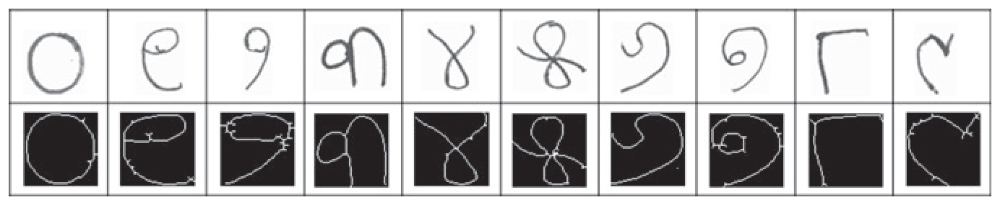
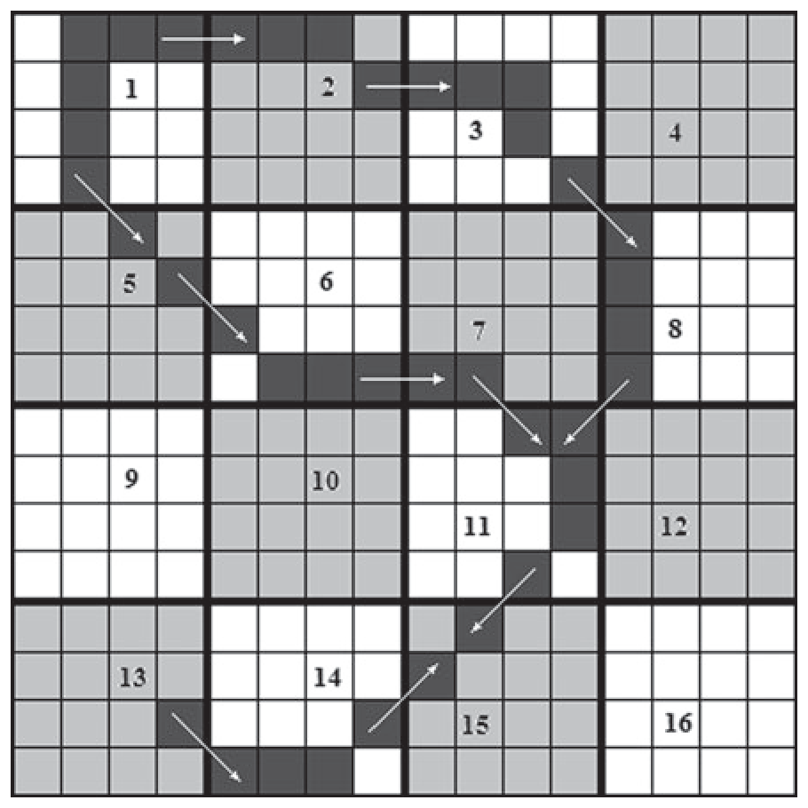

Recognising handwritten Oriya digits by comparing skeleton graphs
Oriya is a language of India, and its handwritten digits have received far less attention from researchers than those of many other scripts. We show a way to recognise them by turning each digit into a small graph and measuring how much it overlaps with graphs of known digits. After training on 5000 images, the method reached 97.64% accuracy on 2200 test images.
Collecting and cleaning the digits
The samples came from students of the National Institute of Science and Technology Orissa, who wrote digit sequences naturally on a form designed for the purpose. The data set was developed at the Center for Microprocessor Applications for Training Education and Research, in the Computer Science and Engineering Department at Jadavpur University. In total there were 7200 images, 720 per digit.
We scanned the forms, cropped out each digit by hand, and converted it to black and white using a threshold of 80%. We trimmed it to the first black pixel on each side, resized it to 64 by 64 pixels and skeletonised it. Skeletonising peels away the edge of the pen stroke until only a line one pixel wide is left, without breaking the stroke apart.

From a skeleton to a graph
We cut the 64 by 64 image into a four by four grid of blocks, each 16 by 16 pixels. Every block becomes one of 16 nodes. Two neighbouring blocks are joined by an edge when the pen stroke continues across the border between them. The paper gives separate rules for the right, lower, lower-left and lower-right neighbours. The result is a graph whose shape follows the digit's shape.

Similarity and classification
To compare two graphs we look for their maximum common subgraph, the largest structure that appears in both. The more alike two digits are, the larger that shared part. The similarity score combines the fraction of nodes shared and the fraction of edges shared.
For each image we computed its average similarity to the training images of each of the ten digits. That gives ten numbers, one per digit, which serve as the features for a k-nearest-neighbour classifier. It labels a new image by majority vote among the k closest training samples. We ran it in the Weka toolkit.
What we found
We trained on 5000 images, 500 per digit, and tested on 2200 images, 220 per digit. Accuracy was 97.72% on the training set and 97.64% on the test set. We tried k = 1, 3 and 5 and the accuracy did not change.
Digits 0, 3 and 8 were recognised perfectly. Digit 7 was the hardest. Of its 220 test images, 196 were correct, 15 were read as a 2 and 9 as a 6. Earlier published work on Oriya handwriting, such as a 2007 system with 94.60% accuracy on 18,190 test samples, dealt with characters rather than digits, so the numbers are not a like-for-like comparison.
What it does not do
We tested one dataset of one script. The method also depends on a skeletonising routine that we took from MATLAB, and the paper suggests that tuning the thinning step could improve results further. We named two next steps: running the method on more datasets and scripts, and using graph kernels for similarity.
The same similarity idea had already been used by us for classifying text.
How to cite the paper
Swarnendu Ghosh, N Das, M Kundu, M Nasipuri (2016). Handwritten Oriya digit recognition using maximum common subgraph based similarity measures. Information Systems Design and Intelligent Applications, Advances in Intelligent Systems and Computing, Vol. 435, pp. 165–173 · Springer.